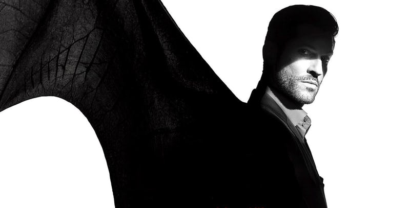
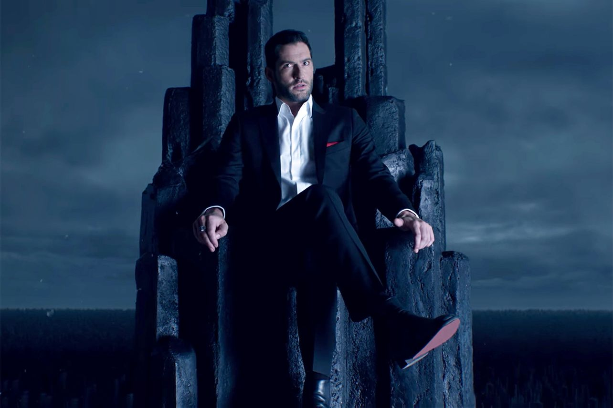
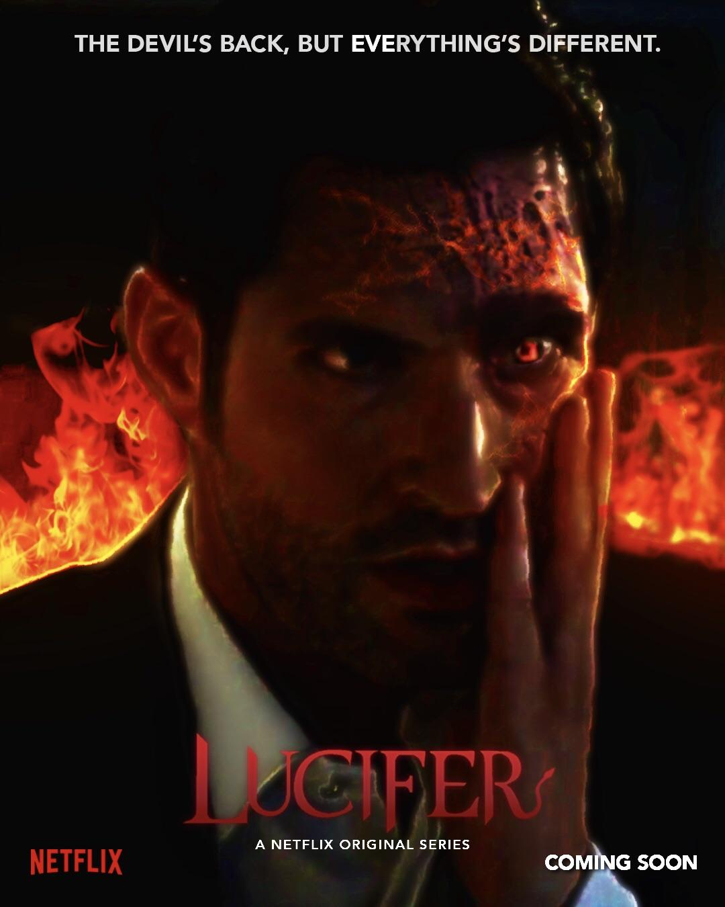
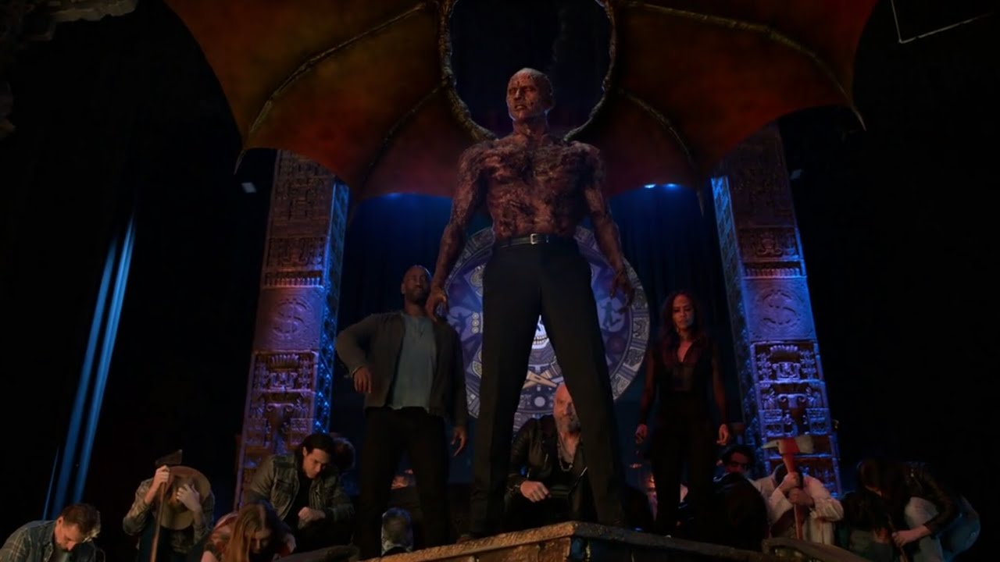

Később kérdőre is vonja őt, és kiderül ,hogy egy ördögűző Vatikáni pappal összedolgozott,hogy visszaküldje Lucifert a pokolba. Lucifer ekkor már nem akar a detektívvel dolgozni, mert tudja,hogy Chloe nem tudja elfogadni igazi alakját. Luciferhez hirtelen vendég jön. Éva az, aki megszökött a Menyországból, hogy újra Luciferrel legyen, mert már nem érezte jól magát a menyben. Meglepi Lucifert az, hogy Éva elfogadja őt olyannak amilyen, így össze is jönnek. Lucifer visszatér az LAPD-hez,mert rájön hogy mégis ott a helye a detektívvel.Chloe eközben a letartóztatott atyától megtudja, hogy van egy prófécia miszerint "Mikor az ördög a földet járja és megtalálja első igaz szerelmét, elszabadul a gonosz."
Közben Lucifer Chloe tanácsára megnézi szárnyait hogy biztos legyen benne,hogy amit tesz az jó, ám ekkor látja hogy az angyal szárnyai megváltoztak és mostmár azok is ördögi alakban vannak. Mikor Chloe elmondja a próféciát neki, úgy gondolja,hogyha megszabadul Évátol megszabadul ördögi énjétől. Meg is teszi, de nem változott tőle semmi. Sőt, elkezdett tovább fejlődni és ezt már lepleznie kellett Lucifernek. A detektív segítségével rájön, hogy azért változik, mert gyűlöli magát és nem tud magának megbocsátani.Chloe rábeszéli őt hogy bocsásson meg magának, és ez sikerült is, mert visszaváltozott.
Kinley atya aki ezalatt kiszabadult a börtönből, megölik, és helyére egy démon jön aki vissza akarja Lucifert vinni a Pokolba mert kell egy király, aki angyal. Erre Lucifer nem hajlandó, de kiderül hogy az újszülött Charlie aki Linda és Amenediel gyereke, félig angyal, és őt akarják elvinni új királynak. Ezt Luciferék megakadályozzák, de Lucifer kénytelen egy nagy áldozatot hozni. Ott kell hagyja a földet és vissza kell térnie a pokolba, hogy a démonok ne jöjjenek vissza a földre. Eközben Lucifer és Chloe végre kimondák egymásnak érzelmeit, és szomorú búcsút vesznek egymástól.
  